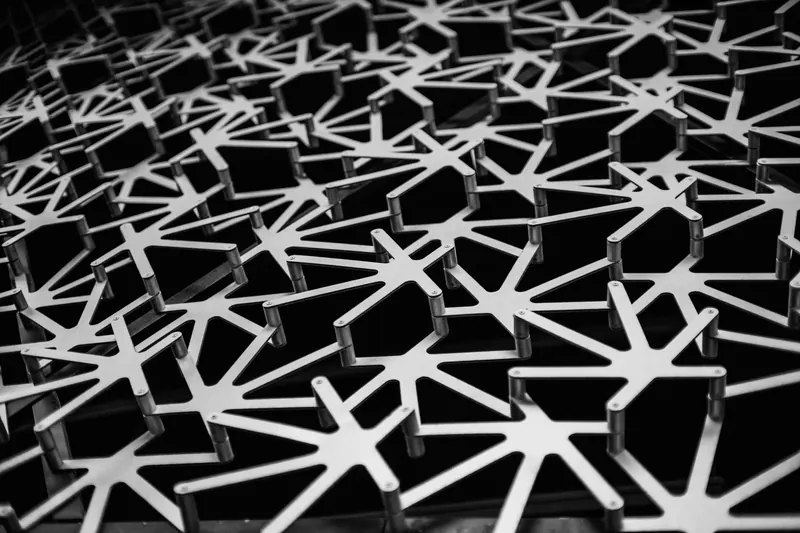
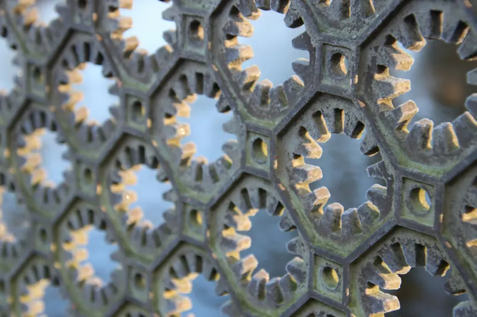
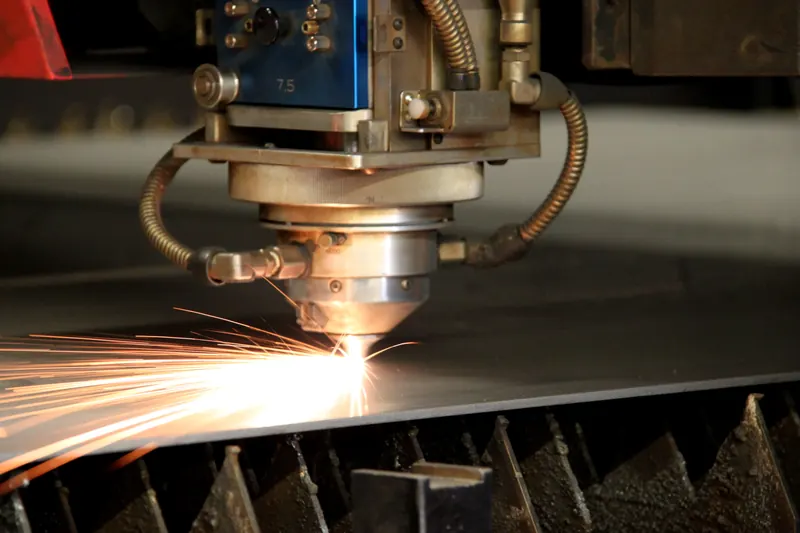
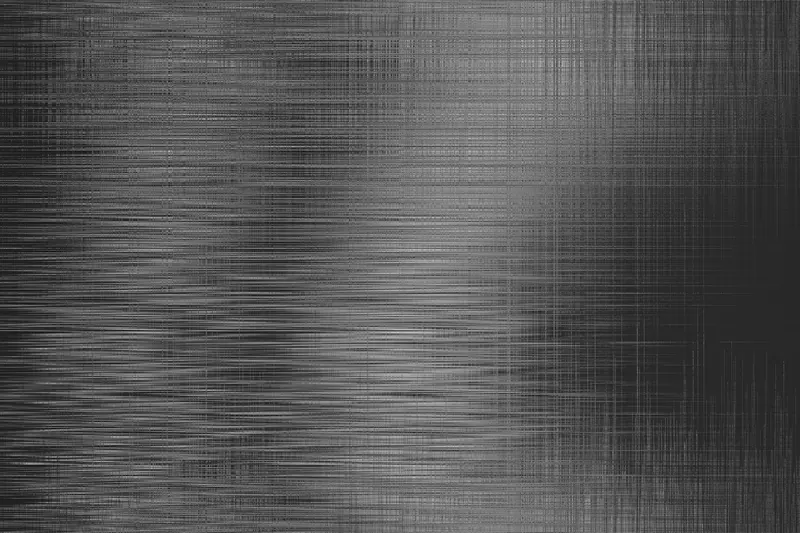

Individual letters (positive)
Each letter is a part cut out of the sheet. They are used for signs on a façade or wall. You don't need to touch the typeface: the inside of the "O" drops out, which is what you want.
Guide · Design
Signs, house numbers, logos on a façade or text cut into a plate: laser-cut metal letters come out clean if the file is well prepared. These are the rules worth following before you send it.

There are two ways to make text in sheet metal, and each has its own rules:
Each letter is a part cut out of the sheet. They are used for signs on a façade or wall. You don't need to touch the typeface: the inside of the "O" drops out, which is what you want.
The letters are openings in a plate. This is where the problem lies: the inside of the "O", the "A" or the "B" is left loose and drops out. It has to be tied in with bridges or you use a stencil typeface.
An island is an inner part left loose when cut: the centre of the O, A, B, D, P, Q, R or the numbers 0, 4, 6, 8 and 9. As SendCutSend puts it, you can't cut a hole inside a hole.
You have two solutions. The first is a stencil typeface, which already has the bridges drawn in. The second is to add the bridges yourself: small strips that join the island to the rest of the plate.
There is no universal minimum height: it is set by the thinnest stroke of the letter, not its height. The published general rules refer to the sheet thickness:
How to apply it: type the text in your program, measure the thinnest stroke and the narrowest opening, and increase the height until both meet the thickness you are going to order. A sans-serif typeface in a medium or bold weight holds up much better than a thin one or one with serifs.
We confirm what our machines can achieve in each material when we review the file. There is more detail in how to design parts for laser cutting.
"Live" text is not cut: the machine doesn't have your fonts. Before exporting, convert it to geometry. Do it last, because afterwards you can no longer edit it as text.
The quote form warns you if the DXF still contains unconverted text. More details in how to prepare the file.
| Use | Usual material | Note |
|---|---|---|
| Indoors, metallic finish | Stainless 1.4301 (304) | Can be left unpainted |
| Outdoors, near the sea or with salts | Stainless 1.4404 (316L) | Better against chlorides: 304 or 316L |
| Large, light letters | Aluminium EN AW-5754 | Weighs a third as much as steel |
| For painting | Cold-rolled or galvanised steel | Painting is coordinated separately |
Thin sheet with a lot of cut-out text tends to distort from the heat of cutting. If the plate is large and the text dense, go up a thickness or space the letters further apart. We explain it in screens and perforated sheet.
A built-up letter has a face and a return that gives it depth. The face comes off the laser; the return is a strip of sheet that is bent or curved to follow the outline and welded or glued. We cut the face and, if you want, the developed strip; the bending and welding are done by your workshop or sign maker.
Fixings also go in the file. If the letter stands off the wall on studs, draw the holes where they go, at the diameter you need and away from thin strokes.
With a new typeface or a logo with fine details, first cut one letter or a small part in the final material and thickness. That way you see how the strokes and bridges turn out before cutting the whole sign.
Upload the file in the quote form. If you only have the logo as a PDF or image, upload it anyway and we tell you whether it can be converted for cutting.
Because they are islands: they are left loose when the outline is cut. Tie the inside in with bridges or use a stencil typeface.
For individual letters, almost any with a medium or thick stroke. For cut-out text in a plate, a stencil font or a regular one with bridges added.
One that keeps the thinnest stroke at least equal to the sheet thickness and the openings open enough. We confirm the size when we review the file.
No: the machine doesn't have your fonts. Convert the text to outlines before exporting.



Igor Rodríguez will help you. Write to us or call Monday to Friday, 7:00 to 15:00 (Spanish time).